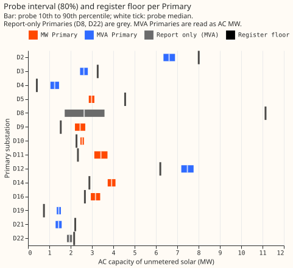
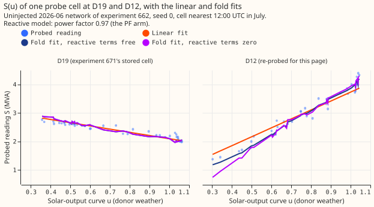

Unmetered solar capacity per Primary, beside what three registers list
At 8 of the 12 Primaries that have a probe interval, the probe's capacity lies above the solar capacity that three registers list. A Primary is a primary substation of National Grid Electricity Distribution (NGED), which steps 33 kV down to 11 kV, and the project labels each one D followed by a number. The probe is a trained demand-forecasting neural network, asked how much a Primary's net demand falls for a given amount of sunshine. Its capacity is in MW of alternating current (AC) for unmetered solar only, so it excludes every generator that NGED meters. The three registers are the Feed-in Tariff, the Embedded Capacity Register, and the Renewable Energy Planning Database. The register floor is the capacity they list inside the Primary's service area, with the sites that NGED meters removed. D2, D3, D5, and D21 lie below theirs.
The probe reads 2.4 to 3.9 MW at each of the six Primaries metered in megawatts (MW), and 1.25 to 6.62 MW at the five main Primaries metered in megavolt-amperes (MVA). The five main MVA Primaries (D2, D3, D4, D19, and D21) are those whose flow never comes near zero on a sunny midday. A reading "folds" where solar output exceeds demand, because an apparent-power meter cannot tell exporting from importing. A twelfth Primary, D12, has a fold-model reading only. D8 and D22 are reported but not compared with the floor. The MVA figures assume that NGED's meters read power factor 1 with a small reactive floor. Under that assumption experiment 679 measures a conversion loss of 0.5 points (80% interval -1.0 to 7.7), and the upper end does not rule out a loss of 7.7 points. Every figure is a whole-summer value, so none shows how capacity grew from month to month.
The hypothesis, that the probe's 90th percentile is at or above the floor at every Primary, fails at D2, D3, D5, and D21. The verdict "supported" follows the decision rule fixed before any total was computed, which reads only the six MW Primaries (5 of 6). The count falls to 5 of 12 if the Feed-in Tariff band of 50 kW to 1 MW is added to the floor.
Every probe number on this page is a stored row of experiments 649, 662, and 671, and this page trains no new neural network.

Figure 1. At 8 of the 12 Primaries with a probe interval, the bar (probe, 10th to 90th percentile) lies right of the black tick (register floor). The eight are D4, D9, D10, D11, D12, D14, D16, and D19. The bars of D2, D3, D5, and D21 lie left of their ticks. D8 and D22 are report-only (grey) and are not among the 12. The floor is the lower bound defined in the register section, with metered sites removed.
The six Primaries metered in MW: D5, D9, D10, D11, D14, and D16
The six MW Primaries need no apparent-power conversion, so the probe's calibration was measured directly on their own flow. The table is experiment 649's calibrated capacity for April to September 2025 at the 2026-06 pretraining cutoff (10th, 50th, and 90th percentile, MW). The raw value is the probe's reading, and the calibrated value divides it by 0.679, the share of an added real solar farm that the probe finds again.
| Primary | Raw p10 / p50 / p90 | Calibrated p10 / p50 / p90 |
|---|---|---|
| D5 | 1.96 / 2.02 / 2.09 | 2.85 / 2.98 / 3.11 |
| D9 | 1.50 / 1.66 / 1.82 | 2.20 / 2.44 / 2.68 |
| D10 | 1.70 / 1.72 / 1.75 | 2.46 / 2.54 / 2.62 |
| D11 | 2.12 / 2.32 / 2.52 | 3.11 / 3.42 / 3.73 |
| D14 | 2.56 / 2.66 / 2.76 | 3.74 / 3.92 / 4.10 |
| D16 | 2.01 / 2.15 / 2.28 | 2.95 / 3.16 / 3.38 |
- Energy-basis sensitivity. Measured in energy, the probe finds 0.88 (all daylight rows) or 0.78 (donor rows) of an injected farm's energy, against 0.68 in MW. Experiment 649 shows that the energy-basis AC capacity agrees with the MW basis within 1.3% at every Primary (D5 2.95 MW against 2.98 MW at the median; the largest gap is 1.3%).
- Other estimates. The calibrated interval overlaps the interval of experiment 474 (rung R4) at 6 of 6 Primaries, with medians 0.94 to 1.14 times its medians. It overlaps experiment 479 at 4 of 6 (D5 and D16 are separated by a gap), with medians 0.90 to 1.13 times its medians.
- Resolution. The values describe a whole summer. A sunny spring makes the probe read a capacity step that is not there (experiment 634), and a capacity step is followed only in an ordinary spring (experiment 638). The probe's 2024 and 2025 summers differ by at most 0.07 MW at every Primary at this cutoff.
- Reactive power. None: these Primaries are metered in signed MW, so no apparent-power conversion applies.
The five MVA Primaries that do not fold: D2, D3, D4, D19, and D21
At D2, D3, D4, D19, and D21, the main figure is the linear probe calibrated by the signed-world recovery of 0.79. The fold model's figure is an upper bound. The linear probe is experiment 662's L0 and the fold model is its FA, both at the 2026-06 cutoff. The signed-world recovery is experiment 662's recovery of an added farm at 0.5 times the midday reading, measured on the six MW Primaries with no apparent-power conversion (median 0.79). Dividing by the signed-world recovery assumes that NGED's meters read power factor 1 with a small always-present reactive floor. Experiment 679 measured the conversion loss of the linear probe at 0.5 times under that assumption: 0.5 points (80% interval -1.0 to 7.7), against 10.7 points when the six MW Primaries are converted with a reactive part of 0.25 times the median real power (power factor 0.97, the "PF arm"). The upper end of the interval does not rule out a loss of 7.7 points, and the loss may lie in the 5-to-12-point range that experiment 671 reported for the PF arm. Experiment 671 recommends the same probe and marks all five figures provisional.
| Primary | Raw linear p50 | Linear, calibrated 0.79: p10 / p50 / p90 | Sensitivity, calibrated 0.68 (PF-arm loss): p10 / p50 / p90 | Fold model, upper bound: p10 / p50 / p90 |
|---|---|---|---|---|
| D2 | 5.20 | 6.35 / 6.62 / 6.89 | 7.38 / 7.69 / 8.01 | 10.44 / 11.28 / 12.13 |
| D3 | 2.06 | 2.44 / 2.62 / 2.80 | 2.84 / 3.04 / 3.26 | 4.03 / 6.30 / 8.58 |
| D4 | 0.98 | 1.05 / 1.25 / 1.45 | 1.22 / 1.45 / 1.69 | 1.12 / 4.38 / 7.68 |
| D19 | 1.13 | 1.35 / 1.44 / 1.54 | 1.56 / 1.68 / 1.79 | 1.96 / 3.03 / 4.11 |
| D21 | 1.13 | 1.29 / 1.43 / 1.58 | 1.50 / 1.66 / 1.83 | 1.32 / 1.92 / 2.52 |

Figure 2. S(u) is the probed reading S plotted against the solar-output curve u (a clear-sky solar share). At D19 the probed reading (MVA) falls steadily as the solar-output curve rises, so a straight line fits it; at D12 the reading rises with the solar-output curve, and the linear fit misses at low values (it reads about 1.5 MVA where the readings are about 1.2). The panels share a vertical axis. Experiment 671's own figure shows the curves of D2, D3, D4, D19, and D21, which are all falling or flat, not V-shaped (see its S(u) figure). D19's cell is 671's stored cell. D12's cell was re-probed for this page with the same probe code on experiment 662's stored uninjected neural network (2026-06 cutoff, seed 0), because no stored output holds D12's curve. The re-probe reproduces 671's D19 capacities exactly (linear 1.12 MW, fold 1.34 MW, seed 0), and reads D12 at -3.13 MW (linear) and 5.35 MW (fold, reactive terms free), against -3.0 and 5.3 MW in experiment 662's five-seed medians. The rising curve at D12 matches 662's crossing-map call that D12 folds.

Conversion loss and the reactive-power setting. The calibrated 0.79 column divides the raw linear reading by the linear probe's recovery in the signed (no apparent-power) world. The sensitivity column divides by 0.68, the recovery when the conversion is the PF arm. The sensitivity column is the capacity if the conversion loss were the PF arm's 10.7 points, and its figures are about 16% higher than the main figures. NGED's statement, relayed by the maintainer, is to assume power factor 1 for the substation meters, with some reactive power always present. Experiment 662 simulated that with a reactive-floor arm (a constant reactive power of 0.10 times the median sunny-midday power) and a zero-reactive arm (a reactive power of zero, so the reading is the absolute value of the real power). The table gives the median recovery of the injected farm over the six MW Primaries for the first farm rotation. The cells marked (679) are experiment 679's, which use all farm rotations (signed recovery 0.746 at 0.5 times, not 0.79), so compare them with 0.746 and not with the 0.79 beside them. The zero-reactive linear cell is derived as 0.746 plus the loss of -0.5 points.
| Probe and reactive model | 0.5 times | 1 times | 2 times | 6 times |
|---|---|---|---|---|
| Linear, PF arm | 0.68 | 0.53 | -0.12 | -0.80 |
| Linear, reactive-floor arm | 0.73 (679) | 0.63 | -0.11 | -0.83 |
| Linear, zero-reactive arm | about 0.75 (679, derived) | not run | -0.10 | not run |
| Linear, signed (no conversion) | 0.79 | 0.78 | 0.77 | 0.78 |
| Fold model, PF arm | 0.73 | 0.71 | 0.78 | 0.88 |
| Fold model, reactive-floor arm | 0.88 (679) | 0.67 | 0.78 | 0.88 |
| Fold model, zero-reactive arm | 0.77 (679) | not run | 0.77 | not run |
| Fold model, signed | 0.85 | 0.63 | 0.28 | -0.03 |
At 0.5 times, the level of the five MVA Primaries, the reactive-floor arm loses 0.5 points of linear-probe recovery, against 10.7 points in the PF arm. Experiment 679 states the loss as the median over the six MW Primaries of each Primary's own difference between the signed and converted recoveries, so it differs from the difference of the medians in this table. Experiment 679's recoveries use all farm rotations (signed 0.746), not the first. The interval of the loss is -1.0 to 7.7 points (80%), and the zero-reactive arm's is -0.5 (-3.3 to 6.8). The fold model's 0.5-times cells are not read as a loss, because experiment 679 finds it reads above the signed world in the floor world (0.88 against 0.80). At 1 times the floor arm recovers 0.63 and the PF arm 0.53, against 0.78 without the conversion, and at 2 times the arms match (-0.11, -0.10, and -0.12).
The conversion loss is therefore probably small at the MVA Primaries, but the data do not rule out a loss of up to 7.7 points. If the meters read power factor 1 with a small floor, the main figures need no further correction. If the loss were 7.7 points, the divisor would be approximately 0.71 (0.79 minus 0.077) and the figures would be about 11% higher. The loss measured at 0.5 times in the PF arm was 5 to 12 points at D9, D11, D14, and D16 (experiment 671). Using experiment 671's per-Primary signed-world values of 0.73 to 0.82 instead of 0.79, the main figures would change by about +8% to -4%.
The reactive power of the real meters is unknown, and no native-world read at the five MVA Primaries exists under the floor arm. Experiment 662's code builds no native floor-arm worlds, so the loss is measured on the six MW Primaries and carried over to the five MVA Primaries.
The main MVA figures use the signed-world recovery 0.79; the PF-arm calibration (reactive power 0.25 times the median real power) appears only in the sensitivity column and in the known-answer tests of experiments 662 and 671.
Three Primaries without a main figure to compare: D12, D8, and D22
D12 has a fold-model figure only, because its linear probe reads negative. The fold model reads 7.19 / 7.48 / 7.77 MW (10th / 50th / 90th percentile, calibrated by 0.704, experiment 662's fold-model recovery factor) and the linear probe reads -3.0 MW raw. Figure 2 shows the rising curve behind the negative linear reading.
D8 and D22 are report-only for the MVA conversion, as are D5 and D10.
- D8: the linear probe reads 1.72 / 2.63 / 3.59 MW (calibrated). Experiment 508 tested whether a gas engine behind D8 explains a large share of its midday dips, so a solar reading there is not separable from the engine.
- D22: the linear probe reads 1.83 / 1.94 / 2.06 MW. Experiment 508 treated D22's midday dips as a mix of causes, so the reading is not a clean solar capacity.
- D5 and D10 for the MVA conversion: in experiment 662's injected worlds both sit past the fold at every level, because their midday readings are about 1 MW and the injected farm is at least 2.0 MW. The reactive-term setting then decides the recovery (experiment 671 reads 0.0 to 1.16 across the fold variants). Their main figures are the MW-probe values above, which need no conversion.
Register cross-check: probe against the register floor at 12 Primaries, and 2 reported only
The floor is the capacity that three registers list inside the Primary's service area, with the sites that NGED already meters removed. The probe estimates unmetered solar, so the floor must exclude metered sites. The definitions below were fixed before any total was computed.
- Where the registers are. The Feed-in Tariff installation report (Ofgem, covering 2010-04-01 to
2025-03-31) is
data/ml-experiments/00045-.../outside/fit_solar_pv_installations.parquet. NGED's Embedded Capacity Register (August 2026 release) isliterature/NGED/NGED ECR AUG 2026.xlsx. The Renewable Energy Planning Database (Q2 2026) is cached inrepd_register.jsonunder the solar BMU census'sinputs/raw/folder. Experiment 129'sregisters.parquetholds the older Feed-in Tariff totals that experiment 267 used. - Coverage and size cuts. The Feed-in Tariff lists photovoltaic installations of every size that it records, by postcode district only. The Embedded Capacity Register lists generation of 50 kW and above that is connected (the table counts only "Connected" solar rows, and some rows carry no coordinate, so they cannot be placed in a polygon). The Renewable Energy Planning Database lists operational solar, mostly 150 kW and above.
- Polygons. The Embedded Capacity Register and the Renewable Energy Planning Database carry
British National Grid coordinates, so each row is placed by point-in-polygon against the Primary's
area_wkt. The Feed-in Tariff has no coordinates, so a postcode district's capacity is shared to a Primary by the share of the district's delivery points inside the polygon (experiment 45'sfit_district_polygon_shares). The Feed-in Tariff column is therefore a share, not a point-in-polygon total. - De-duplication. Feed-in Tariff sites above 50 kW can also appear in the Embedded Capacity Register, and a Feed-in Tariff row cannot be matched to a register row (no coordinates), so the floor counts the Feed-in Tariff only up to 50 kW. A Renewable Energy Planning Database row within 1 km of an Embedded Capacity Register row inside the same polygon counts as the same site and is dropped. The match is by distance only, so it can miss a site that the two registers place more than 1 km apart, and can merge two neighbouring sites.
- Metered sites. A register row within 1 km of a solar generator that NGED meters is removed from the floor. The page does not name those generators.
- Floor (main). Feed-in Tariff up to 50 kW (declared net capacity, the AC figure) plus Embedded Capacity Register rows below 1 MW, plus Embedded Capacity Register rows of 1 MW and above connected at 11 kV or below, plus Renewable Energy Planning Database rows below 1 MW that match no Embedded Capacity Register row, all with metered sites removed. A row with a corrupted coordinate (203 Embedded Capacity Register rows have a coordinate inflated by a power of 10) is divided by 10 until it lies in Great Britain; rows with no coordinate (655 connected rows) are not placed, so the floor is a lower bound. Sites of 1 MW and above that connect at 33 kV or above are left out of the main floor, because they connect above the Primary and are not behind its meter. They are in the all-sites sensitivity column, together with Renewable Energy Planning Database rows of 1 MW and above that match no Embedded Capacity Register row (adding the Renewable Energy Planning Database rows of 1 MW and above changes no flag).
| Primary | FiT to 50 kW: AC (DC) | FiT 50 kW to 1 MW | ECR below 1 MW | ECR 1 MW and above (of which 33 kV and above) | REPD operational (of which also in ECR) |
|---|---|---|---|---|---|
| D2 | 1.98 (2.04) | 0.15 | 1.02 | 15.00 (10.00) | 4.90 (4.90) |
| D3 | 2.07 (2.16) | 0.32 | 0.00 | 5.82 (4.62) | 6.40 (6.40) |
| D4 | 0.36 (0.38) | 0.05 | 0.05 | 0.00 (0.00) | 0.00 (0.00) |
| D5 | 1.39 (1.44) | 0.66 | 0.46 | 9.20 (6.50) | 11.30 (11.30) |
| D8 | 1.48 (1.55) | 0.23 | 0.75 | 8.91 (0.00) | 1.50 (1.50) |
| D9 | 1.54 (1.59) | 0.03 | 0.00 | 0.00 (0.00) | 0.00 (0.00) |
| D10 | 1.36 (1.39) | 0.54 | 0.91 | 27.50 (27.50) | 42.60 (34.00) |
| D11 | 1.65 (1.70) | 0.92 | 0.69 | 0.00 (0.00) | 0.00 (0.00) |
| D12 | 1.27 (1.32) | 0.61 | 0.18 | 4.75 (0.00) | 5.00 (5.00) |
| D14 | 2.01 (2.10) | 0.51 | 0.87 | 0.00 (0.00) | 0.00 (0.00) |
| D16 | 1.59 (1.64) | 0.61 | 1.08 | 56.70 (56.70) | 0.00 (0.00) |
| D19 | 0.70 (0.72) | 0.03 | 0.05 | 0.00 (0.00) | 0.00 (0.00) |
| D21 | 1.25 (1.30) | 0.34 | 0.96 | 0.00 (0.00) | 0.00 (0.00) |
| D22 | 0.69 (0.71) | 0.30 | 1.47 | 0.00 (0.00) | 0.00 (0.00) |
All values are MW inside the Primary's polygon. FiT is the Feed-in Tariff, ECR the Embedded Capacity Register, and REPD the Renewable Energy Planning Database. The Embedded Capacity Register's capacity is its "already connected registered capacity" and the Renewable Energy Planning Database's is its "installed capacity (MWelec)". Neither register states a direct-current or alternating-current basis in these columns, so they are read as AC.
At 8 of 12 Primaries the probe's interval lies above the floor; D2, D3, D5, and D21 lie below it. "Probe above floor" means the probe's 10th percentile is at or above the floor, "overlaps" means the floor lies inside the 10th to 90th percentile, and "below floor" means the 90th percentile is below the floor. "Not comparable" marks the report-only Primaries. The ratio is the probe's median over the floor.
| Primary | Probe 10th to 90th (MW) | Floor, main (MW) | Floor, all sites (MW) | Ratio | Flag |
|---|---|---|---|---|---|
| D2 | 6.35 to 6.89 | 8.01 | 8.01 | 0.83 | below floor |
| D3 | 2.44 to 2.80 | 3.27 | 3.27 | 0.80 | below floor |
| D4 | 1.05 to 1.45 | 0.41 | 0.41 | 3.02 | probe above floor |
| D5 | 2.85 to 3.11 | 4.55 | 4.55 | 0.65 | below floor |
| D8 | 1.72 to 3.59 | 11.14 | 11.14 | 0.24 | not comparable (report-only) |
| D9 | 2.20 to 2.68 | 1.54 | 1.54 | 1.59 | probe above floor |
| D10 | 2.46 to 2.62 | 2.27 | 2.27 | 1.12 | probe above floor |
| D11 | 3.11 to 3.73 | 2.34 | 2.34 | 1.46 | probe above floor |
| D12 | 7.19 to 7.77 | 6.20 | 6.20 | 1.20 | probe above floor |
| D14 | 3.74 to 4.10 | 2.88 | 2.88 | 1.36 | probe above floor |
| D16 | 2.95 to 3.38 | 2.67 | 59.37 | 1.19 | probe above floor |
| D19 | 1.35 to 1.54 | 0.75 | 0.75 | 1.93 | probe above floor |
| D21 | 1.29 to 1.58 | 2.21 | 2.21 | 0.65 | below floor |
| D22 | 1.83 to 2.06 | 2.16 | 2.16 | 0.90 | not comparable (report-only) |
- D5 is below the floor mainly because of one site. Embedded Capacity Register sites of 1 MW and above at 11 kV or below contribute 2.70 MW of D5's 4.55 MW floor. Without it the floor is 1.85 MW and the probe's interval is above it. The data cannot say whether that site lies behind the Primary's meter or is metered, so this is a flag, not a cause.
- D3 is below the floor by 0.47 MW. Its floor is 3.27 MW (2.07 MW from the Feed-in Tariff up to 50 kW and 1.20 MW from an Embedded Capacity Register site at 11 kV) against a probe 90th percentile of 2.80 MW. With the sensitivity calibration (0.68) the margin is 0.01 MW. Experiment 671 reads D3's linear capacity as provisional, and the fold model's upper bound is 4.03 to 8.58 MW.
- D2's floor (8.01 MW) lies 1.12 MW above the probe's 90th percentile (6.89 MW), and includes 5.00 MW from sites of 1 MW and above. With the sensitivity calibration the 90th percentile is 8.01 MW, the same as the floor, and D2 overlaps it. D2 is the only flag that depends on the calibration. At D2 the fold model's upper bound is 10.44 to 12.13 MW.
- D21 is below the floor. Its floor is 2.21 MW, mostly 0.96 MW from the Embedded Capacity Register below 1 MW and 1.25 MW from the Feed-in Tariff up to 50 kW. The linear probe reads 1.29 to 1.58 MW (1.50 to 1.83 MW with the sensitivity calibration) and its calibration is provisional. The data cannot say which side is wrong.
- D16's all-sites floor of 59.37 MW is not a comparison. It includes 56.70 MW of sites of 1 MW and above that connect at 33 kV or above.
- Feed-in Tariff band of 50 kW to 1 MW. Adding it to the floor lowers the count above the floor from 8 to 5 of 12 (D11 and D16 move to "overlaps", and D10 moves to "below floor", because its floor of 2.27 MW plus 0.54 MW is 2.81 MW against a probe 90th percentile of 2.62 MW), but it is probably counted twice with the Embedded Capacity Register's sheet below 1 MW, so the main floor leaves it out.
- Double counting that remains. The Feed-in Tariff between 50 kW and 1 MW overlaps the Embedded Capacity Register's smaller sheet. The band is left out of the floor and listed in the table. The Feed-in Tariff is a share of postcode districts, so it can over- or under-count a Primary whose boundary cuts a district.
Caveats
- The MW-Primary factor 0.68 may not transfer to rooftop panels with other tilts. The probe finds 0.68 of an injected real farm's AC MW (0.676 to 0.708 across the four injected farms). The factor comes from four injected farms that resemble each other, and may not transfer to a fleet of rooftop panels with other tilts.
- Energy-basis spread. Measured in energy, the recovery is 0.78 (donor rows) to 0.88 (all daylight rows), so the capacity of a physics-shaped plant carrying the same energy is 0.77 to 0.87 times the megawatt-basis capacity.
- The fleet is many systems with no single clip. An unmetered fleet has many panel tilts and inverter limits, so the AC capacity here is an effective figure for a fleet shaped like the injected farms.
- Intervals. The 80% interval is widened by the farm-to-farm spread of the recovery factor. In the checks of experiment 649 it covered the injected truth in 0.81 of 96 constant injections, a value consistent with 0.80 and not more precise than about 0.1.
- No month-by-month change. Nothing here shows how capacity changed from one month or year to the next. The probe's 2024 and 2025 summers differ by at most 0.07 MW at every MW Primary.
- MVA Primaries. The main MVA figures assume power factor 1 with a small reactive floor, where experiment 679 measures a conversion loss of 0.5 points (80% interval -1.0 to 7.7). The interval's upper end does not rule out a loss of 7.7 points, which would raise the figures by about 11%. The reactive power of the real meters is unknown, and no native-world read at the five MVA Primaries exists under the floor arm.
- The two newest registers may list sites built after the probes' 2026-06 cutoff. The Embedded Capacity Register is the August 2026 release and the Renewable Energy Planning Database the Q2 2026 release, so both can list sites connected after the probes' 2026-06 cutoff, and neither carries a date that could remove them. The Feed-in Tariff ends at 2025-03-31.
- Feed-in Tariff shares. The district shares of overlapping Primary polygons can sum above 1 over Primaries, so the Feed-in Tariff column can count one district's capacity twice.
- Registers. The registers lag installations, list some sites twice, and list sites connected above the Primary. The probe and the registers also measure different things (a probe reading of a whole summer against capacity as registered).
- NGED's event labels are incomplete, so the rows behind the probes may hold unlabelled events.
What would change this
- NGED's list of connected solar behind a Primary, if it lies outside the probe interval by more than the interval's width. Where the list (a count and total capacity at 11 kV and below) does, the probe's calibration or the floor's match to metered sites is wrong at that Primary. D2, D3, D5, and D21 are the four where the flags already point that way, so those four records would settle most. D2's probe 90th percentile is 1.12 MW below its floor.
- A reactive-floor arm in the native worlds of the five MVA Primaries. That would replace the MW-Primary measurement of the conversion loss with a measurement at the five MVA Primaries themselves. It needs a code change in experiment 662's native-world builder.
- Knowing which of D5's and D2's large sites lie behind the Primary's meter would settle both flags.
Checks
- Forecast checks: the experiment scores no forecast, so the median-minus-mean and quantile-score checks do not apply.
- Prediction (1) held: the probe's 80% interval lies above the combined floor at 5 of the 6 MW Primaries (D5 is below it). Prediction (2) held: the probe is above the Feed-in Tariff floor (up to 1 MW, the floor of experiment 267, reproduced from experiment 649's table) at 6 of 6 MW Primaries and above the combined floor at 5 of 6. Prediction (3) held: 3 of the 5 main MVA Primaries lie below the floor (D2, D3, and D21). Prediction (4) was not tested: experiment 267's totals are Feed-in Tariff only, and the Feed-in Tariff here uses the same district-share method.
- D12 re-probe: one CPU process, one stored network, about 1.5 minutes. No neural network was trained.
Code: ml-experiments/00673-pv-capacity-for-nged-per-primary-with-register-cross-check/:
e00673_deliverable.py (tables and figure 1), e00673_d12_probe.py (the D12 re-probe, which
imports experiment 662's and 671's modules), and e00673_s_of_u.py (figure 2).